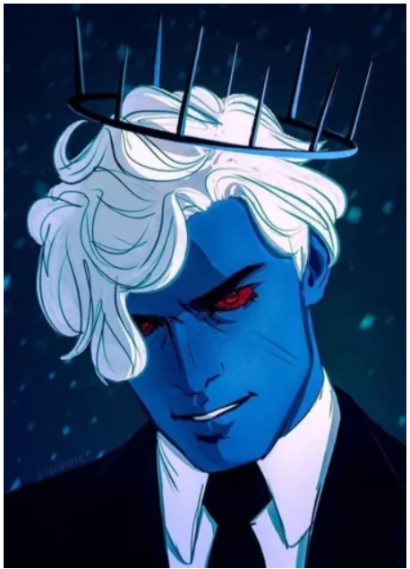
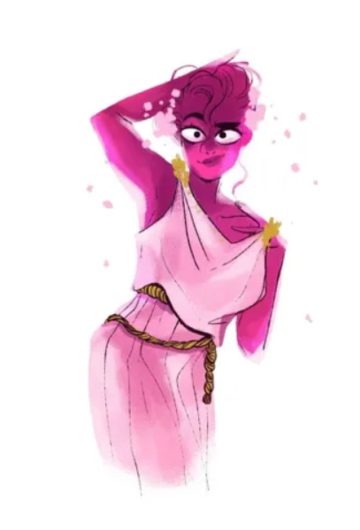
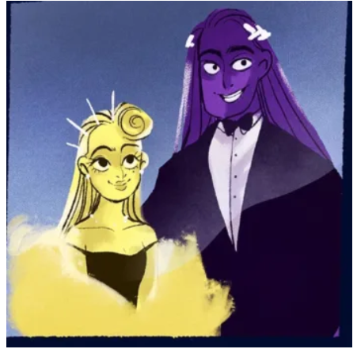
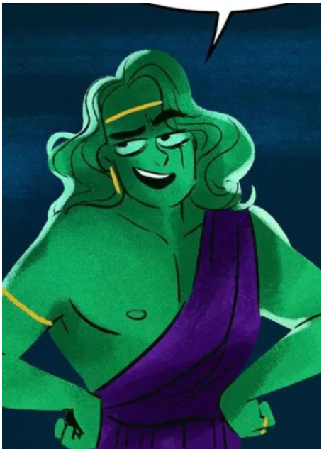

Lore Olympus
characters
Hades
In the Lore Olympus webtoon, Hades, the God of the underworld, takes center stage. Often depicted as a handsome blue man in a business suit, Hades runs the Underworld Corporation, serves as the older brother of Zeus and Poseidon, and plays a role in the Six Traitor Dynasty. His character takes on the burden of leadership and pursuing personal interests.
Persephone
Persephone, the goddess of spring, is the story’s heroine alongside the underworld. Initially portrayed as an innocent and naive young woman, her character develops dramatically as she faces more challenges.
Zeus
Zeus, the king of the gods, is depicted as a yellow-skinned man with long, straight hair. Known for his promiscuity and egotism, Zeus’ actions often brought chaos to Olympus. A member of the Six Realms of Lies, he has intimate relationships with many characters, including his brothers Hades and Poseidon, and many lovers. His character provides a lens through which to examine issues of power and corruption.
Poseidon
Poseidon, the God of the sea, is Zeus’s brother from the underworld. He is usually characterized by a carefree and quick temperament, portrayed with green skin and long, wavy hair. Despite being slightly less witted, Poseidon is very loyal to his family. His relationship with his wife Amphitrite and their polygamous arrangement add an intriguing dynamic to his character.